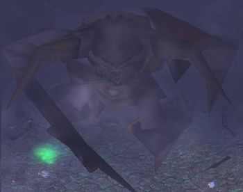

Shooter on Skeleton King
Drones should be put on allies respectively deciding about which player is most usefull and or needs healing(Boss tank).
Shooter's ultimate is great Crowd Control handling spell, it stuns and silences respectively.
You should use it as means to secure Stomp (25% 50% 75%) without other people sacrificing.
IMPORTANT: Remember, during Comet Storm(F) you are immune to damage, but not immune to Instant Kill effect of Fall spell!
When Skeleton King uses Fall spell, use your W to make sure that people with drone dont get dragged in the middle of it.
Pay attention to Skeleton skills, your hero can counter them with W. Releasing Silenced allies or Stunned by pull ones.
Try to use W before using T, it happens often that you agro Skeleton with T resulting him in using Silence spell on you.
Try to stay as far as possible, your drones are all you need in terms of range.
Your T is amazing, you are not affected by Skeleton's Push spell while using it.
You also dont get stunned when mini skeletons pulls you, but you are still getting your position changed.
If you are playing with Crimson Star, when using Q try to target allies that might need heal, the heal from Crimson Star empowered Q is roughly 2x INT per missle (4x INT if hit by two).